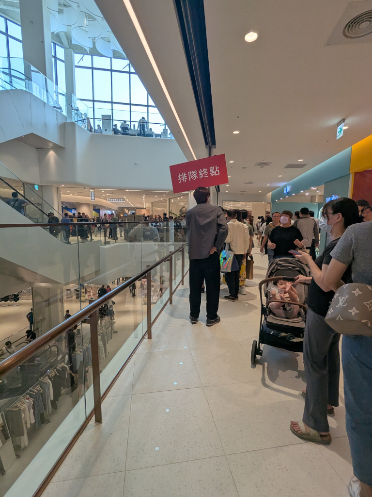
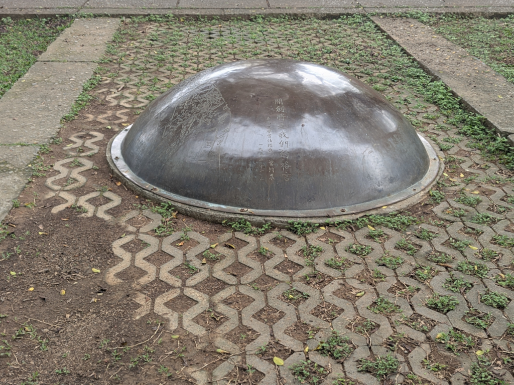
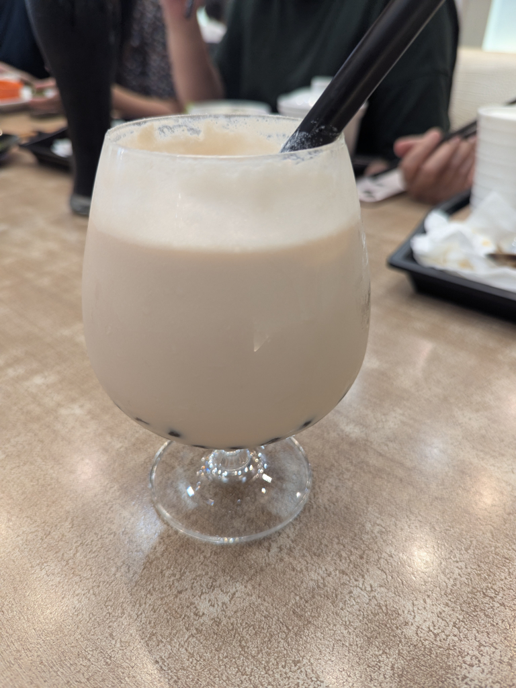
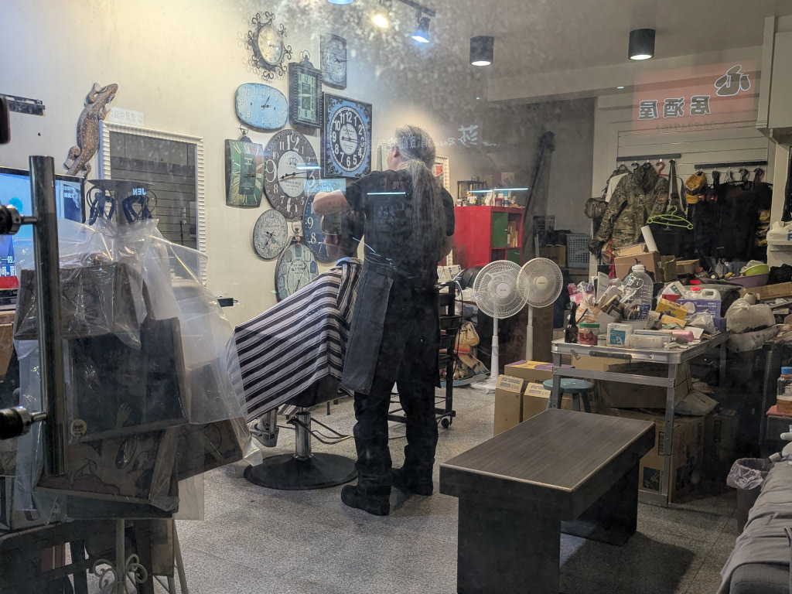
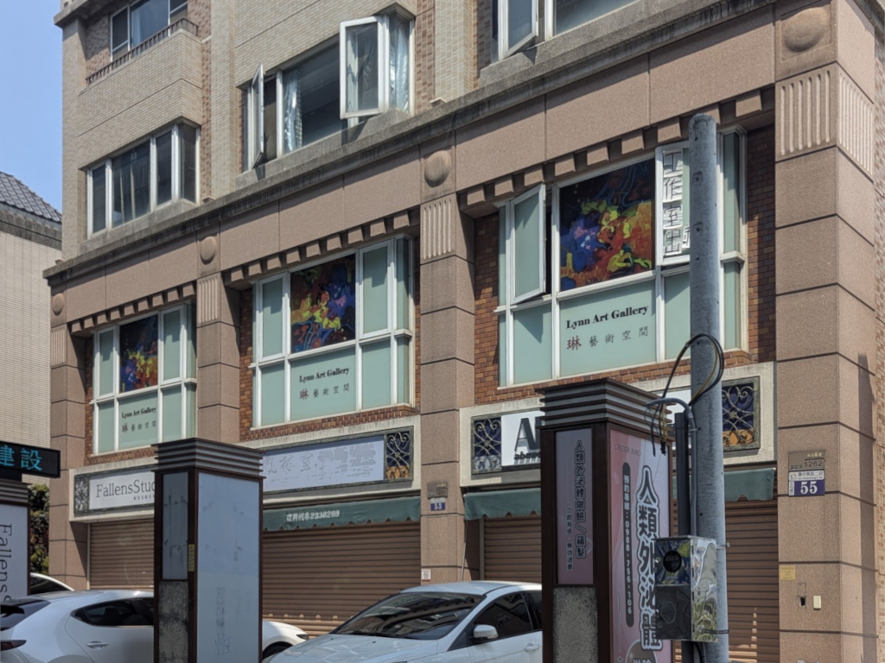
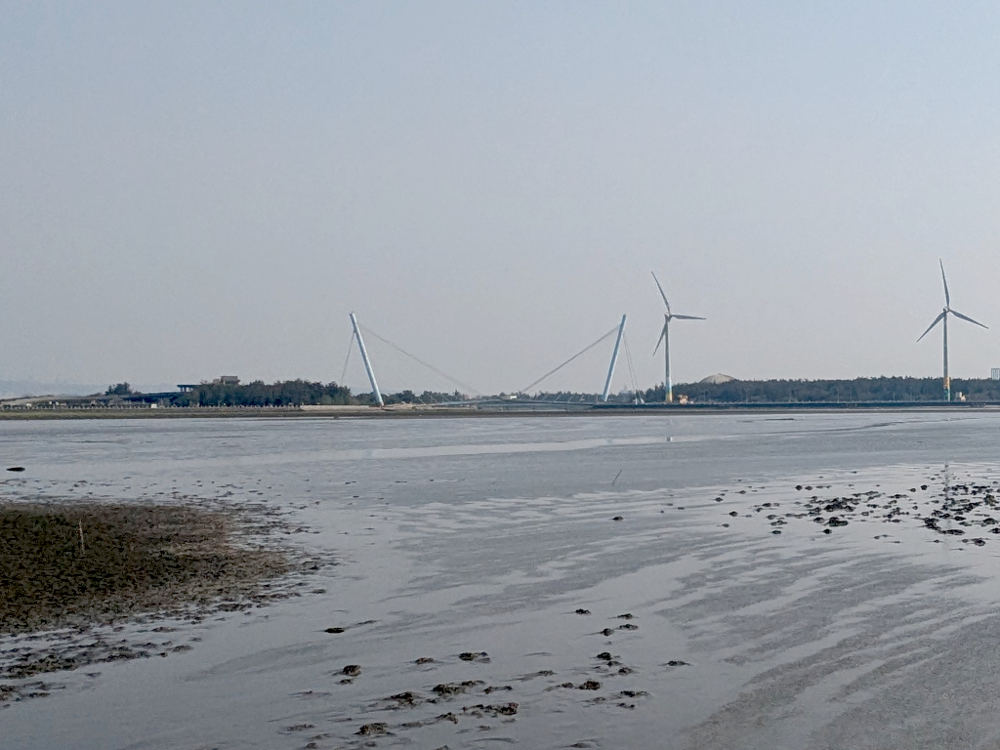
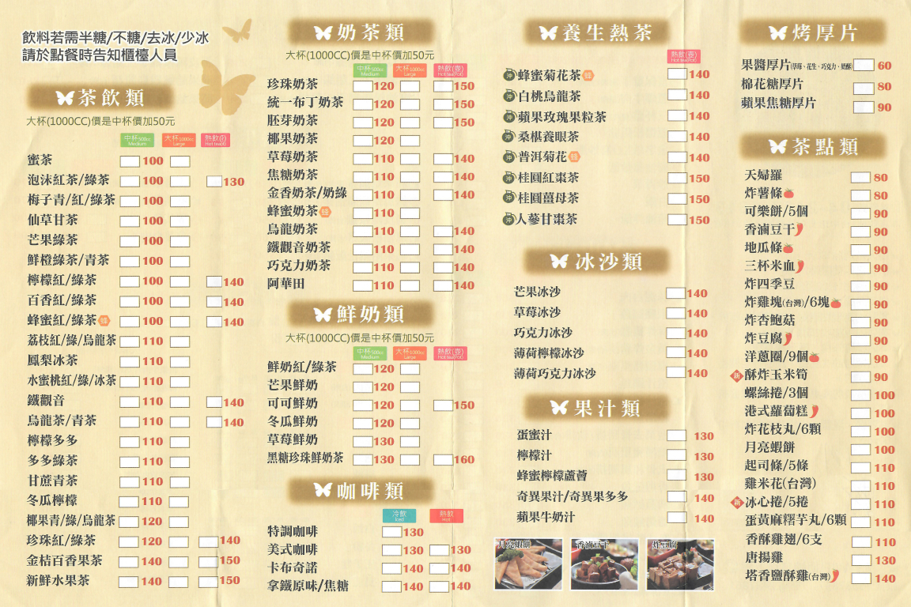
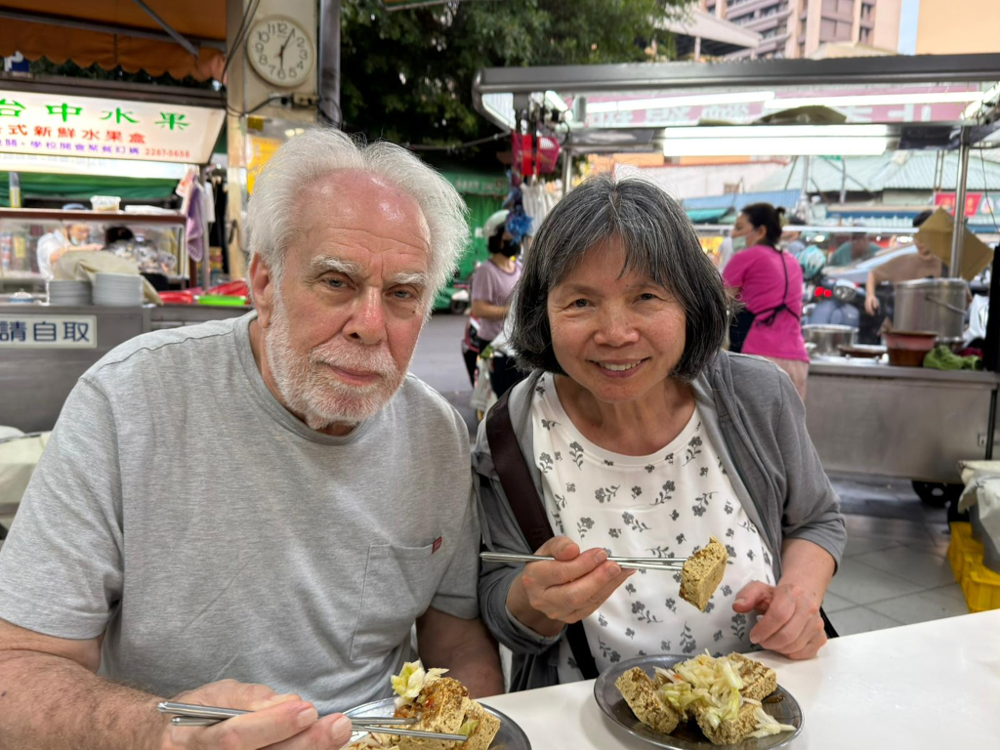

Miscellaneous Pictures
Main | Previous 1 2 3 4 5 6 7 8

At the busy Hanshin Department Store grand opening, in order to maintain some semblance of order, this end of line sign (排隊終點) indicated where to join the line for whatever the line was for. Not a bad idea.
Tunghai University’s time capsule was sealed in 2000. It was created to commemorate the new millennium, and it is scheduled to be opened for the very first time in 2050. This durable monument made of granite, designed with military-grade waterproofing and moisture-proofing to safely preserve its contents for half a century, contains a vast array of artifacts representing life at the turn of the 21st century, including campus photographs, representative objects (such as old student IDs and club badges), written letters from faculty and students, and even digital storage media from the Windows 98 era.
Mei-O's 珍珠奶茶 (bubble tea) at 茶自點 (Self-service Tea). The server mixed her order up with someone else's, but it was still good.
Around 7:00 one evening, we passed by this single-chair barbershop. Here's a peek through its very dirty window into a messy shop with a bunch of non-working clocks (nice collection!) and a huge 壁虎 (gecko) on the wall, two fans going, and a barber with untypically long gray hair cutting a young man's hair while they watched TV.{kind=link}
{kind=link}

The 琳藝術空間 (Lynn Art Space). I just like this picture, so it's here. Searching the web (Facebook, YouTube, etc.) for more information about it, there hasn't been any activity since 2024.)
A distant view across the mudflats of the Gaomei Double-Curved Hyperbolic Landscape Bridge (also called the Scenic Bridge). It's a pedestrian and bicycle-friendly suspension bridge located in the 高美溼地野生動物保護區 (Gaomei Wetland Preservation Area). Famous for its unique slanted pillars and double-curved design, it offers panoramic views of the coastal ocean, local wind turbines, and stunning sunsets.
Many restaurants and coffee shops have menus like this where you can check the boxes of whatever you want, then give it to the server or counter person to have your order filled. It's really quite convenient. This one is from 茶自點 (Self-service Tea). There are more selections on the back.
I've already used this picture on Day 7, Page 4, but seeing that this is more or less the last page of pictures on this Taiwan 2026 website, I felt it appropriate to use it again here; with Mei-O, enjoying one of my favorite Taiwanese street foods, 臭豆腐 (stinky doufu).